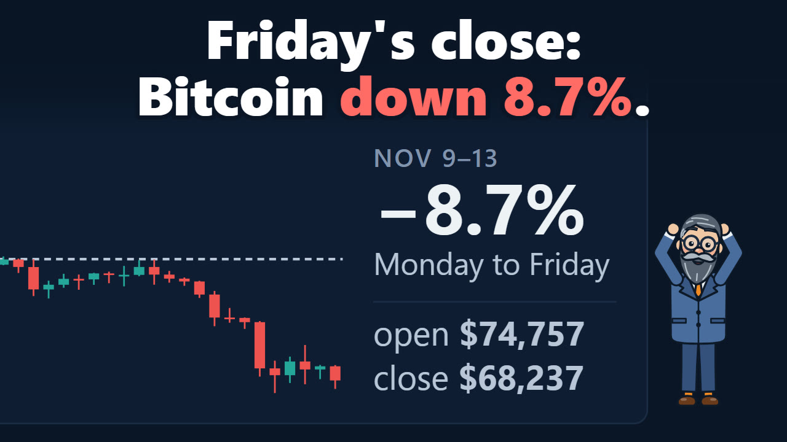
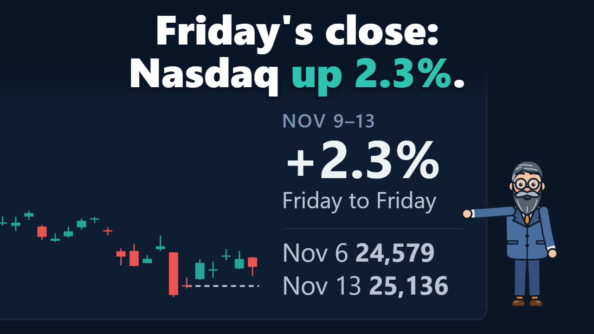
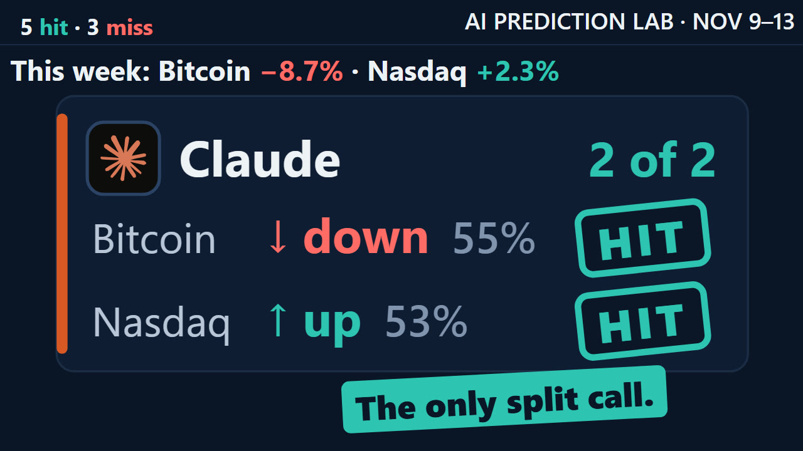
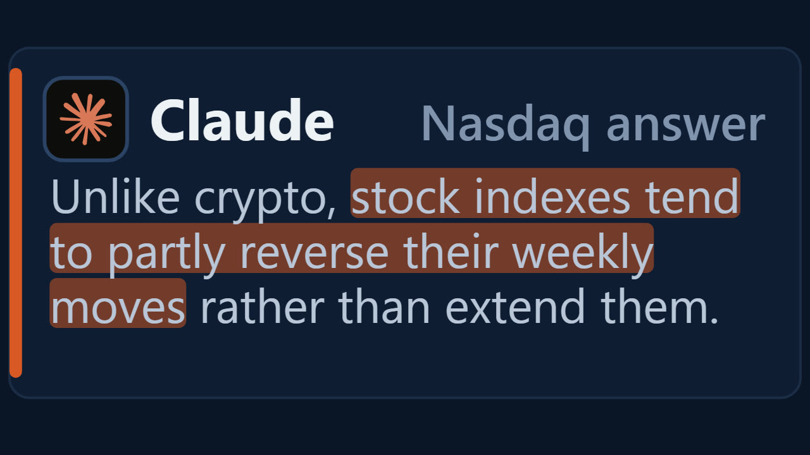
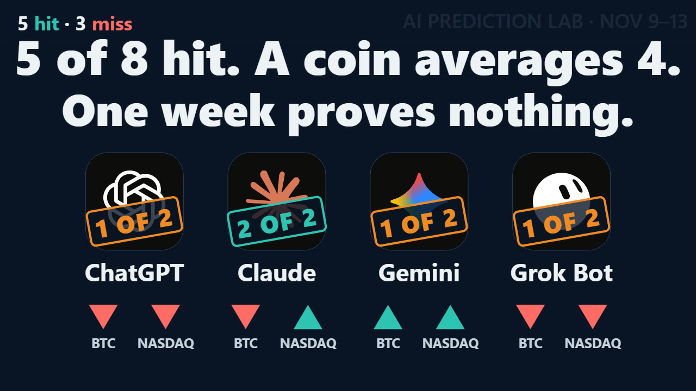

Bitcoin fell 8.7% and the Nasdaq rose 2.3%. Only Claude's two calls both hit
Four AIs called two markets for the week of November 9–13, and the lab recorded all eight calls in its public ledger on November 8, before the week began. On Bitcoin, ChatGPT, Claude and Grok Bot said DOWN and Gemini said UP. On the Nasdaq Composite, Claude and Gemini said UP, and ChatGPT and Grok Bot said DOWN.
The two markets went opposite ways. On Coinbase, Bitcoin started the week at $74,756.52 and ended it at $68,236.54, down 8.7%. The Nasdaq Composite closed at 25,136.27 on Friday, 2.3% above the previous Friday's close.
So the Bitcoin calls read three of four and the Nasdaq calls two of four. Three AIs gave both markets the same direction, so each of them got one right and one not. Claude was the only one to call the two apart, and it is the only one with both marked hits. A coin averages two of four in each market, and one week is too small a sample to say much about any of the four.
- −8.7%Bitcoin from Monday's start price to Friday's end price, on Coinbase
- +2.3%the Nasdaq Composite, from the November 6 close to the November 13 close
- 3 of 4Bitcoin calls marked hits: ChatGPT, Claude and Grok Bot
- 2 of 4Nasdaq calls marked hits: Claude and Gemini
- 2 of 4what a coin averages, in each market
The two questions
Each AI got the same prompt for each market and found its own data.
- Bitcoin. Would the Coinbase BTC-USD price at Friday, November 13, 23:59:59 UTC be strictly higher than at Monday, November 9, 00:00 UTC?
- The Nasdaq Composite. Would the index's official close on Friday, November 13 be strictly higher than its close on Friday, November 6, 24,579.42?
UP meant strictly higher. Anything else counted as DOWN. A hit or a miss depends only on the direction, not on the confidence. The two windows are not the same: the Nasdaq's starts at Friday's close, so its Monday gain counts, while Bitcoin's starts at midnight UTC on Monday, after the weekend.
| AI | Bitcoin | Nasdaq | Both |
|---|---|---|---|
| ChatGPT | DOWN, 65%, hit | DOWN, 58%, miss | 1 of 2 |
| Claude | DOWN, 55%, hit | UP, 53%, hit | 2 of 2 |
| Gemini | UP, 57%, miss | UP, 62%, hit | 1 of 2 |
| Grok Bot | DOWN, 56%, hit | DOWN, 55%, miss | 1 of 2 |
Start price74,756.522026-11-09 00:00 UTC
Lower −8.72%
End price68,236.542026-11-13 23:59 UTC
3 of 4 calls came true
- ChatGPT Lower ✓ Hit
- Claude Lower ✓ Hit
- Gemini Higher ✗ Miss
- Grok Bot Lower ✓ Hit
Prices: Coinbase Exchange BTC-USD: open of the 4h candle at 2026-11-09T00:00Z; close of the 4h candle at 2026-11-13T20:00Z, the same as the 1-minute candle at 23:59Z. Candles: Coinbase Exchange BTC-USD, 4-hour (hollow: rose, filled: fell). The dashed line is the start price, from where the week opens, and the dot the end price; each arrow is one model's call, up for Higher and down for Lower; its slant shows which way, not how far. Higher means the end price is above the start price.
How Bitcoin's week went
All prices here are Coinbase BTC-USD, in UTC.
- Monday, November 9, 00:00. $74,756.52. This is the start price the calls are measured from. The week's high, $75,500.00, came in its first four hours.
- Monday, 20:00–24:00. The last 4-hour candle to close above the start price, at $75,259.28. Bitcoin closed above it in 4 of the week's 30 four-hour candles.
- Tuesday, November 10. The US inflation report came out. The Block's headline that day: Bitcoin "slides below $74,000 after hotter-than-expected CPI".
- Thursday, November 12. The day ended at $71,369.90, 4.5% below the start. CoinDesk wrote that Bitcoin slipped with tech stocks as outflows from Bitcoin funds reached a fifth day.
- Friday, November 13, 04:00–08:00. A low of $67,555.00, 9.6% below the start and the week's low.
- Friday, November 13, 23:59:59. $68,236.54. This is the end price, $6,519.98 or 8.7% below the start.
From the week's high to its low, Bitcoin moved 10.5%. The reasons in the news reports are theirs, and this page has not checked them.

How the Nasdaq's week went
These are the Nasdaq Composite's official closes, at 4:00 p.m. New York time.
| Day | Close | That day | Since November 6 |
|---|---|---|---|
| Friday, November 6 | 24,579.42 | the start | |
| Monday, November 9 | 25,253.14 | +2.7% | +2.7% |
| Tuesday, November 10 | 25,065.87 | −0.7% | +2.0% |
| Wednesday, November 11 | 25,466.19 | +1.6% | +3.6% |
| Thursday, November 12 | 25,366.09 | −0.4% | +3.2% |
| Friday, November 13 | 25,136.27 | −0.9% | +2.3% |
The index fell on three of the five days and ended the week up anyway. Monday's gain, 2.7%, was larger than the whole week's. Every close of the week stayed above the start. Yahoo Finance summed up Friday as the S&P 500 and the Nasdaq slipping "to cap volatile week".

Same week, two directions
Last week Bitcoin moved with the Nasdaq. This week it did not, at least not over the whole week.
To compare the two over the same hours, the table takes Bitcoin at 20:00 UTC, the end of the 4-hour candle nearest the Nasdaq's close at 21:00 UTC. Monday's Bitcoin change counts from Friday at 20:00, the weekend included, as the Nasdaq's does from Friday's close.
| Day | Nasdaq | Bitcoin, at 20:00 UTC |
|---|---|---|
| Monday | +2.7% | −1.3% |
| Tuesday | −0.7% | −1.9% |
| Wednesday | +1.6% | +1.3% |
| Thursday | −0.4% | −3.7% |
| Friday | −0.9% | −3.6% |
| Friday to Friday | +2.3% | −8.9% |
- Four days of five went the same way. Monday was the exception: the Nasdaq rose 2.7%, and Bitcoin fell 1.3%.
- Bitcoin's falls were bigger. On Thursday and Friday it fell 3.7% and 3.6%, against 0.4% and 0.9% for the Nasdaq.
- The scored Bitcoin move is a little different. From Monday 00:00 to Friday 23:59:59, the window the calls are checked on, it is −8.7%.
Claude had named this pattern on Sunday, as the signal it weighted most: "US stocks bounced, but Bitcoin slid to a new low. When BTC can’t rise on a day stocks do, the extra demand that would lift it is missing." It was describing the Friday before the week. On Monday, stocks rose again and Bitcoin fell. Five days show the two parting ways, not why.
What they said before the week
All four Bitcoin answers named the outflows from Bitcoin funds as a factor pulling DOWN. Gemini named them too, and called UP anyway. Its first factor was: "Tactical mean-reversion setup near $74.7k support". Bitcoin went below $74,700 on Monday and ended the week $6,463.46 under it.
ChatGPT Lower · 65%
- $1.28 billion in weekly spot Bitcoin ETF outflows
- Failed recovery near $81,000 and elevated market fear
- Tuesday's US CPI release could improve risk sentiment
Claude Lower · 55%
- ETF outflows, BTC lagging stocks
- December hike odds near 80%
- Extreme fear, soft-core CPI consensus
Gemini Higher · 57%
- Persistent spot Bitcoin ETF net outflows
- Tactical mean-reversion setup near $74.7k support
- U.S. CPI inflation release on Tuesday
Grok Bot Lower · 56%
- Persistent ETF outflows
- Failed midweek recovery
- Weekend stabilization and rebound potential
In each model's own words, recorded in the ledger with its call.
Tuesday's inflation report was on three of the four Bitcoin lists. ChatGPT and Gemini counted it as pulling Bitcoin UP, and Claude counted the "soft-core CPI consensus" as pulling UP. Grok Bot's list left it out. The Block reported the figure as hotter than expected. On the Nasdaq, Claude and Gemini also counted the report as pulling UP, and the index fell 0.7% that day.
These are the factors the four gave for the Nasdaq, word for word from the ledger:
- ChatGPT, DOWN, 58%: "Sharp weekly decline and elevated market volatility" (DOWN); "CPI and PPI surprises could intensify rate concerns" (DOWN); "Friday's recovery and upcoming AI earnings" (UP).
- Claude, UP, 53%: "Extreme fear, chips at 13x forward" (UP); "Hike priced, soft-core CPI consensus" (UP); "Thursday AI earnings, data-center policy risk" (DOWN).
- Gemini, UP, 62%: "Tactical rebound from multi-week oversold lows" (UP); "U.S. October CPI release on Tuesday" (UP); "Recent mega-cap volatility and yield headwinds" (DOWN).
- Grok Bot, DOWN, 55%: "AI valuation and infrastructure uncertainty" (DOWN); "Restrictive-rate pressure" (DOWN); "Semiconductor rebound and recovery potential" (UP).
A hit marks the direction and nothing else. It does not show that the reasons behind a call were the right ones.
Call by call
The reasons and the passages in quotation marks are word for word, from the ledger and the full answers.
ChatGPT: Bitcoin DOWN, 65%, hit. Nasdaq DOWN, 58%, miss
Its Bitcoin reason: "Persistent ETF outflows and weakening momentum favor another negative week." At 65%, it was the most confident of the four on Bitcoin.
On the Nasdaq it changed its mind inside its own answer. It opened with "My call is UP, with moderate confidence." Further down it wrote: "I am revising my initial UP lean to DOWN." Only the CALL line at the end is recorded, and it said DOWN. The first lean would have hit.
Claude: Bitcoin DOWN, 55%, hit. Nasdaq UP, 53%, hit
Its Bitcoin reason: "Persistent outflows and hawkish Fed extend five-week downtrend". Its Nasdaq reason: "Extreme fear, cheap chips, soft core CPI consensus".

It was the only AI to call the two markets apart, and it gave a reason for treating them differently: "Unlike crypto, stock indexes tend to partly reverse their weekly moves rather than extend them." It was also the least sure. At 55% and 53%, its two calls were the lowest on each market. It wrote of the Nasdaq: "I lean UP on base rates, washed-out sentiment and cheap chips, with low conviction."

Gemini: Bitcoin UP, 57%, miss. Nasdaq UP, 62%, hit
Its Bitcoin reason: "Oversold four-week drop and Tuesday CPI data favor mean-reversion bounce". Its Nasdaq reason: "Oversold bounce and upcoming CPI report support tactical mean-reversion".
It made the same case for both markets, a bounce after weeks of falls, and it was the only AI to call UP on both. The Nasdaq bounced on Monday. Bitcoin did not. At 62%, its Nasdaq call was the most confident of the four.
Grok Bot: Bitcoin DOWN, 56%, hit. Nasdaq DOWN, 55%, miss
Its Bitcoin reason: "Persistent ETF withdrawals and failed recovery outweigh rebound potential". Its Nasdaq reason: "Unresolved AI concerns narrowly outweigh rebound potential".
On the Nasdaq it weighed Friday's chip rebound against the worries about AI and wrote: "One positive session does not establish that those pressures have faded." The index rose 2.7% the next session and closed every day of the week above where it started.
What two weeks show
Very little.
- A coin averages two of four in each market. Four coin flips get three or more right 5 times in 16, about 31% of the time.
- The calls in a market are not separate tests. They answer one question about one price, so the three Bitcoin DOWN calls stood or fell together, and so did the two Nasdaq UP calls.
- Three of three is not rare by chance. Claude has three hits from three scored calls over two weeks. A coin gets three of three one time in eight. With four AIs, the chance that at least one of them does is about 41%.
- Confidence cannot be judged yet. On Bitcoin the four averaged 58% confidence and 75% of the calls hit. On the Nasdaq they averaged 57% and half hit.
On Bitcoin, after two weeks, ChatGPT and Claude have two hits from two, and Gemini and Grok Bot one from two. This is the Nasdaq's first scored week.

What's next
The next calls come on Sunday, November 15, for the week of November 16–20. As before, each AI gets the same prompt and finds its own data, and the calls go into the ledger before the week starts. The eight calls on this page stay as recorded.
Updates
Newest first. Each entry is dated, and the text above changes only with a new entry here.
- November 14. First version of this page, with the week's result.
How this page was made
- The calls are the eight entries recorded in the ledger on November 8: the Bitcoin calls at 16:48 UTC and the Nasdaq calls at 18:18 UTC. The ledger only grows: an entry is never edited or removed.
- Bitcoin prices come from Coinbase's BTC-USD candles. The start price is the open of the Monday 00:00 candle. The end price is the close of the one-minute candle at Friday 23:59, the last trade before the week ended.
- Nasdaq closes come from FRED's NASDAQCOM series, whose source is Nasdaq. Yahoo Finance's ^IXIC data gives the same closes.
- The day-by-day comparison sets Bitcoin at 20:00 UTC against the Nasdaq's close at 21:00 UTC. The hour between them is left out.
- What moved the prices is what the news reports named. This page passes it on and has not checked it.
Sources
- Coinbase Exchange: BTC-USD candles
- FRED: NASDAQ Composite Index (NASDAQCOM)
- The Block, November 10: Bitcoin slides below $74,000 after hotter-than-expected CPI
- CoinDesk, November 12: Bitcoin, tech stocks and a fifth day of ETF outflows
- Yahoo Finance, November 13: Stock market today: the S&P 500 and the Nasdaq cap a volatile week
- The lab: the ledger, the Bitcoin calls and reasons
This is an experiment and documentation, not financial advice. I do not recommend buying or selling anything.